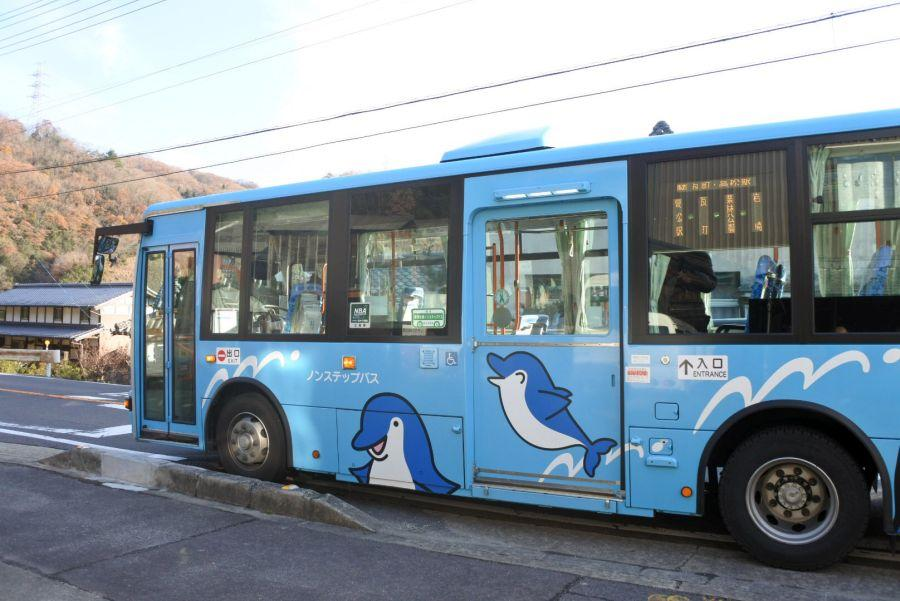

讃岐うどんツアー上級編、my丼店 < 香川県各地 >

打ちたて・湯がきたてのツヤツヤなうどん。
けど、ここ屋外...？
どんぶりがそれぞれ違う...？
香川県では うどんを食べることが出来るのは、うどん店だけではありません。時にはうどん作っている工場、製麺所へ行って麺を分けて頂くことも可能です。
製麺所ってどんなところ？
高松市郊外の製麺所へやってきました。
「うどん」
なんて看板や幟はありません。
「うどんを食べさせる」「店」
では無いからです。製麺所ツアーは まず事業所を発見するところから始まります。
と、それよりも前の準備がありました。
自分で箸や器、薬味を用意して持参しましょう。
製麺所さんは あくまで 「麺作り」 が仕事。「飲食サービス」 を行うお店ではありません。
打ちたて・湯がきたてのうどん
「ごめんくださーい」
「うどん分けてもらえませんかー」
うどん1玉を、自分で持ってきた器に入れてもらいました。
一玉＝80yen
え、それで本当にいいの？ という価格です。
どうせなら湯がきたてを狙って行きましょう。
噂では8:30が一番釜と言われている こちらのお店。そうすると 打ちたて・湯がきたてのツヤツヤうどんを頂くことができます。
※ 時間はあくまで うどん通の有人に聞いた話。その日の天候や注文個数によって変わると思います
おんたまぶっかけ
持参した大根おろしとおんたま(温泉卵)・ネギをかけて、自作おんたまぶっかけの出来上がり！
食べる場所はご覧の通り、道路のそばです。
おんたま山かけうどん
こちらは温玉と山かけ(山芋)を混ぜれば、自作おんたま山かけうどん。予め薬味を持参して行けば、色んなうどんを楽しむことができます。
製麺所冬の楽しみ、きそば
冬季限定、きそばの製麺を行っている製麺所さんも多い。
一玉＝90yen
四国のそばは "田舎そば" と呼ばれる太い麺が特徴。徳島県の山間部が産地ですが、この場所も香川県ながら徳島との県境に近いので、その流れがあるのかもしれません。
関連記事
2017,10/23 手作り田舎そばを食べに、そばやへ < そばや / 徳島県 >
食べ終わって...

うどん・そばを食べていたら、路線バスが通過しました。そんな場所で食べるうどん、これも "独特の味" です。
ごちそうさまでした。
打ちたて・湯がきたてのうどん食べて、そば食べて、おかわりして... 大満足。
製麺所ツアー、通称 "my丼店ツアー"
まずは薬味や食器を準備してから、製麺所を探し、そこに来てうどんを分けてもらえた時の感動、その味はひとしお。一層美味しく感じられます。
讃岐うどんの人気店舗めぐりが一段落したら、次はmy丼店を巡ってみてはいかがでしょうか。
※ お店の性質上、製麺所名の掲載は控えさせて頂きます